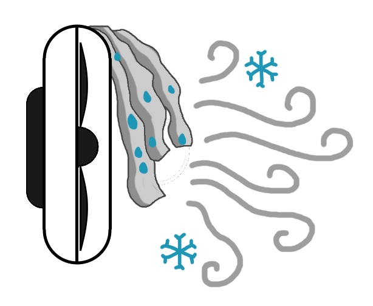

caca
L'objectif de cette page est d'étudier le refroidissement d'une pièce avec un montage simple constitué d'un ventilateur et de bandelettes imbibées d'eau.

Pour cela j'ai accroché des bandelettes imbibées d'eau sur un ventilateur et j'ai fait une étude théorique du phénomène.